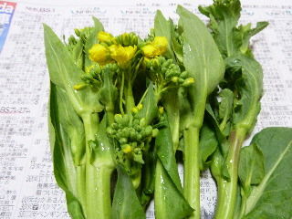
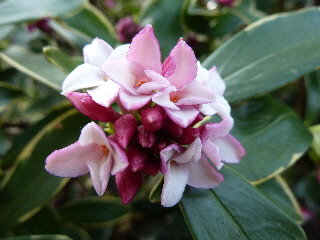
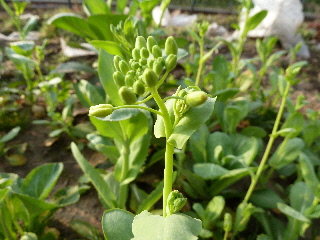
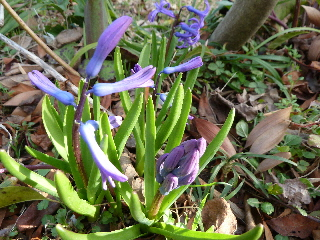
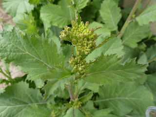
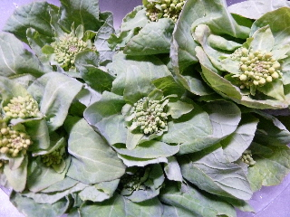
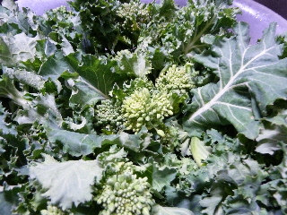
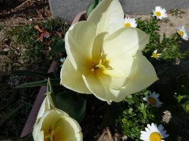
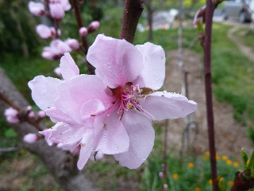

遊びで植物を育てよう
2013/03/03
小松菜の花は美味しいな。
小松菜の菜花が採れました。

湯がいて食べると美味しいんですよね。
小松菜にかぎったことじゃないですが、春の菜花は甘くて美味しいので好きです。
【3月TOP】
【日記TOP】
【園芸TOP】
2013/03/09
ジンチョウゲのいい匂いがしました。
ジンチョウゲの花が咲き始めました。

風下はとってもいい匂いがします。
春ですね。
あちこちで咲いてれば、そこれじゅうがいい匂いになるんでしょうね。
【3月TOP】
【日記TOP】
【園芸TOP】
2013/03/09
何かの野菜の花が咲きそうです。
何かは忘れちゃいましたが、中国野菜の花が出てきました。

菜花と同じ感じですね。
茹でて美味しくいただきました。
【3月TOP】
【日記TOP】
【園芸TOP】
2013/03/10
ヒヤシンスの花が咲いていました。
小さいヒヤシンスが木の下で咲いてました。

花が大きいものをよく見ますが、小さいものも可愛くていいですね。
【3月TOP】
【日記TOP】
【園芸TOP】
2013/03/17
杏子の花が咲き出しました。
東京ではソメイヨシノが開花のようですが、私の家では杏子の花が開花です。

まだ少しですが、蕾もすぐに咲きそうです。
ピンク色が綺麗ですね。
【3月TOP】
【日記TOP】
【園芸TOP】
2013/03/17
カラシ菜は苦いな。
カラシ菜が大きくなったので収穫しました。

苦いですね。
でも今の時期は茎が柔らかいので、ちょっと食べやすかった。
【3月TOP】
【日記TOP】
【園芸TOP】
2013/03/17
白菜の菜の花が沢山出ました。
白菜って食べきれないで、春になっちゃうと花が出ちゃうんですよねー。

これはこれで、菜の花としていただきます。
冬の間ずーっと白菜って食べ続けていたので、ちょっと味が変わってうれしいです。
【3月TOP】
【日記TOP】
【園芸TOP】
2013/03/17
「あすっこ」って変な格好ですよね。
島根の野菜、あすっこですね。

今年初収獲しました。
久しぶりに見ると、なんか違和感がありました。
去年はどうやって食べてたっけ？
なんかもう忘れちゃった。
【3月TOP】
【日記TOP】
【園芸TOP】
2013/03/23
すももの花が咲き出しました。
小さい花が沢山咲いてます。

小さすぎるし、葉っぱも出てるのであんまり目立たないです。
花がいっぱいだけど、何個が実になるのかなー？
【3月TOP】
【日記TOP】
【園芸TOP】
2013/03/23
チューリップが咲きました。
もうチューリップの季節ですね。
白のシンプルなタイプなので、咲くのが早いです。

チューリップまつりとかは今年は何日でしょうね？
桜が散りだすとチューリップのイメージがあるので、桜が今年は早いのでチューリップも早いかな？
まつりの日程がちょっと気になります。
【3月TOP】
【日記TOP】
【園芸TOP】
2013/03/31
桃の花は綺麗ですね。
桃はちょっと花が大きくて見栄えがいいです。

柔らかそうな花びらがかわいいですね。
色も綺麗です。
これが沢山の実になると、なおいいですね。
【3月TOP】
【日記TOP】
【園芸TOP】
過去の日記
【2024年4月の日記】
【2023年3月の日記】
【2022年3月の日記】
【2021年3月の日記】
【2020年3月の日記】
【2019年3月の日記】
【2018年3月の日記】
【2017年3月の日記】
【2016年3月の日記】
【2015年3月の日記】
【2014年3月の日記】
【2013年3月の日記】
【3月TOP】
【日記TOP】
【園芸TOP】
畑仕事じゃないよ。
【おいしいものを食べよう。】【たくさん寝よう。】
【ソロ活をしよう!】【季節感のあることをしよう。】【動画視聴はほどほどに。】【当サイトの全てのコンテンツは無断転載禁止です。】